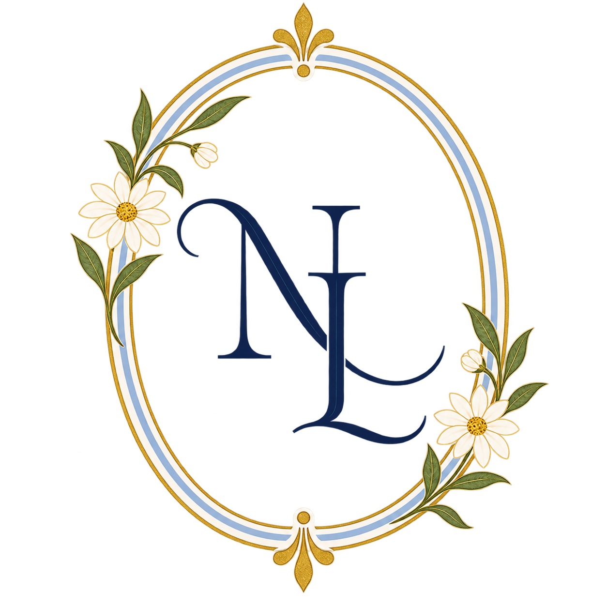
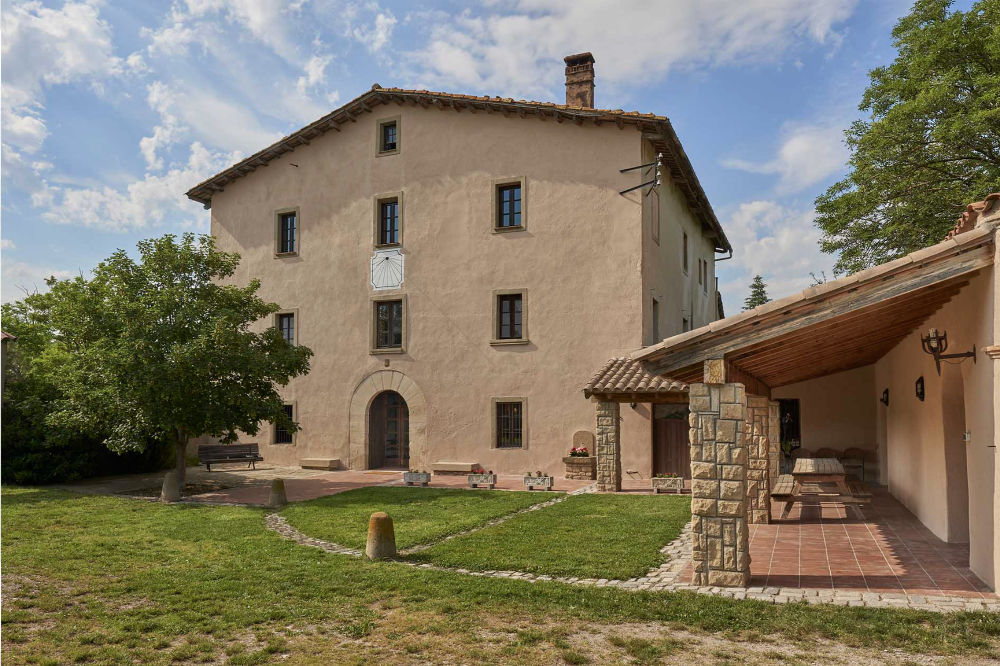

Arribada
Benvinguda a la masia i primera copa.



Ens casem
24 · 06 · 2028
Una nit d'estiu, a la fresca, amb la gent que estimem.
Descobriu els detallsBenvinguts
Aquesta web serà la nostra invitació i l'espai on anirem afegint tota la informació pràctica per al dia del casament.
24 de juny
Horaris provisionals. Els anirem actualitzant a mesura que els tinguem confirmats.
Benvinguda a la masia i primera copa.
Una cerimònia senzilla, íntima i molt nostra.
Capvespre, conversa i alguna cosa bona per compartir.
Taula llarga, espelmes, flors i ambient de revetlla.
Música, copes i ganes d'allargar la nit.
Falta cada vegada menys
El lloc
Aquí hi posarem el nom de la masia, l'adreça, la informació d'aparcament i l'enllaç a Google Maps.

A la fresca
Pi, olivera, margarides, llum càlida i una taula llarga d'estiu.

Quedeu-vos
La nostra intenció és que la majoria ens hi puguem quedar a dormir.
Dress code
Un casament d'estiu a l'aire lliure. Aquí hi podrem afegir recomanacions quan ho tinguem més clar.
Informació útil
Aquí hi posarem la informació definitiva sobre l'accés i l'aparcament.
Sí. La nostra intenció és que la majoria de convidats es puguin quedar a dormir a la masia.
Ho podreu indicar al formulari de confirmació.
Hi afegirem tota la informació quan la tinguem confirmada.
Us esperem
Més endavant connectarem aquest botó amb el formulari de confirmació.
Confirmar assistència